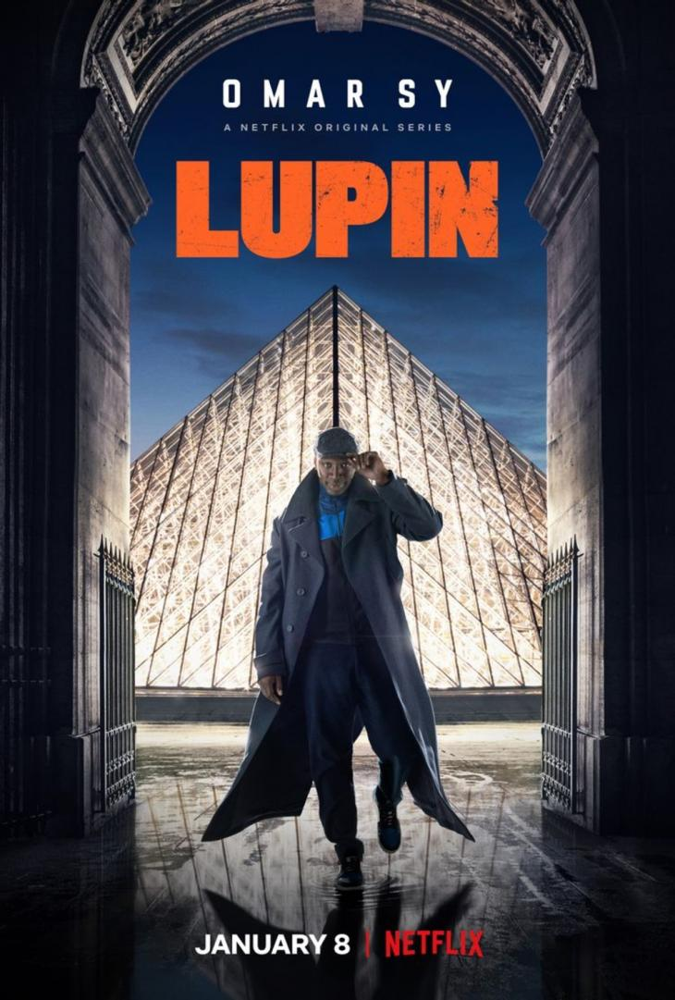

hyngns dynamic webprogramming project
넷플릭스 드라마 소개
뤼팽
뤼팽

프랑스에서 제작된 액션 어드벤쳐 미스터리 드라마로서 신사 도둑이자 변장술의 장인인 아산 디오프가 주인공이다.
장르는 미스터리 및 범죄 드라마이며 파트 1은 5부작이다.
아르센 뤼팽 시리즈를 원작으로 하지만 셜록(드라마)과 달리 아르센 뤼팽을 현대 배경으로 옮겨놓은 내용이 아니라, 현실세계처럼 아르센 뤼팽 소설이 존재하고, 주인공 '아산 디오프'가 아르센 뤼팽을 모방하면서 활동하는 내용의 드라마이다.